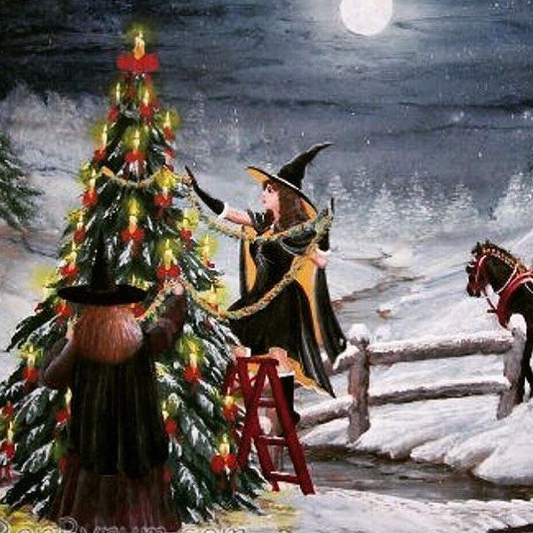

Neste site temos tudo
que você precisa saber sobre os Sabbats Maiores!
A Roda do Ano diz respeito ao conjunto
de celebrações que marcam as mudanças da Natureza, ou seja, os equinócios,
solstícios e as estações do ano. Com origem nos antigos festivais Celtas
e, tradicionalmente, denominadas de Sabbaths, ocorrem oito vezes
ao ano, sendo divididas conforme às subdivisões climáticas:
Yule, o Solstício de Inverno;
Ostara, o Equinócio de Primavera;
Litha, o Solstício de Verão;
Mabon, o Equinócio de Outono;
Yule, mais conhecido como o nosso natal
Ostara, como conhecemos nossa páscoa
Litha o ápice do verão
Mabon, o nosso outono
Apesar de que em Yule, inicia-se o inverno, se sabe que ao longo do tempo, a primavera começará a dar os primeiros sinais de abundância. Trata do dia mais curto e a noite mais longa do ano. Em outros termos, um período de escuridão e introspecção, mas também de esperança e renascimento.
Yule nos mostra que não importa o quão frio esteja o inverno e quão escura esteja a noite, o Sol retorna e renasce vibrando vitalidade, trazendo calor e luz. Por esse motivo, dizemos que Yule é o Sabbat do nascimento e esperança. Como se após a caminhada na escuridão, este Sabbat questionasse: O que você aprendeu ao andar pelas florestas sombrias de si mesmo? Agora que sabe mais de si, o que você quer dar à luz?
Nesse Sabbat, estamos introspectivos, mas com uma sementinha de esperança plantada, aguardando o momento de florescer. É um convite a planejar o que você quer que prospere ou renasça na sua vida. O Deus já nasceu e, portanto, estamos planejando o que fazer para, em sequência, colocarmos em prática.
